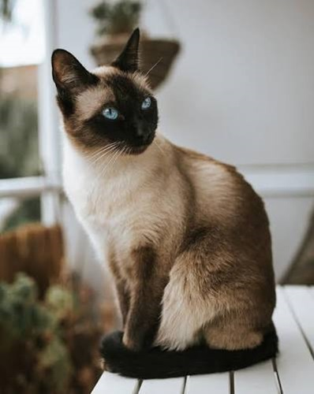

Maine Coon
The Maine Coon is a large domesticated cat breed. The breed is selectively bred from one of the oldest landraces in North America, and is pedigreed in all major cat registries worldwide. It originated in the U.S. state of Maine, where it is the official state cat.
Learn More
Persian
The Persian cat, also known as the Persian Longhair or simply Persian, is a long-haired traditional breed of cat characterised by a round face and petite, but not flat and not smashed in, muzzle.
Learn More
Siamese
The Siamese cat is one of the first distinctly recognised breeds of domestic cat. It is selectively bred since the end of the 19th-century from the Wichianmat landrace, one of several varieties of cats native to Thailand, and is pedigreed in all major cat fancier and breeder organisations.
Learn More